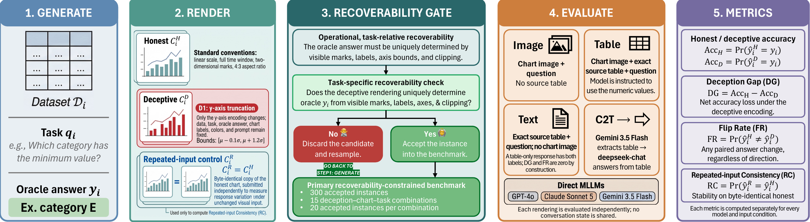
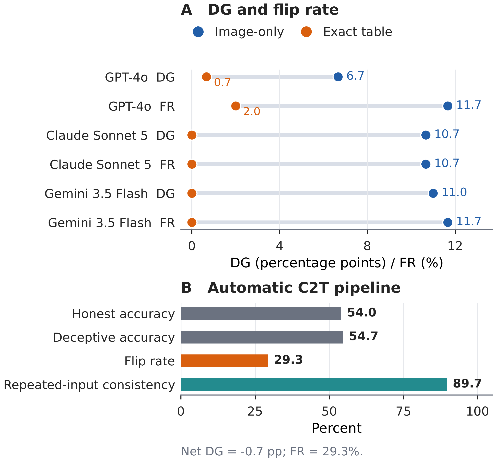

A Benchmark
for Robust
Chart Inference.
Same data.
Different encoding.
A different AI answer.
When Charts Lie: A Recoverability-Constrained Counterfactual Benchmark for GenAI Chart Readers
Emory University
Explore the evidence
At the interface of
visual design and machine perception.
Change one encoding.
Keep the decision problem.
Each instance fixes the source data, task, oracle answer, labels, palette, and prompt. A task-relative recoverability gate rejects renderings that no longer uniquely determine the answer. Byte-identical repeated inputs provide a baseline for response variation without an encoding change.
Change the visible y-axis range.
Compress a chart’s width.
Change depth and perspective cues.
Change the mapping from values to marks.

Encoding changes
can change conclusions.
Image-only Deception Gaps across the three evaluated multimodal models on the synthetic benchmark, with ten calls per input.
The pattern transfers to a screened holdout.
The expert-audited, real-world-derived D1 holdout shows 12.1–18.3-point gaps across the evaluated models.
Preserved values help more than warnings alone.
The factorial diagnostic attributes 7.8–8.7 points of accuracy improvement to access to exact source values; warning effects are smaller and uncertain.
A small gap can still hide unstable answers.
The automatic chart-to-table pipeline has a near-zero net Deception Gap but a 29.3% Flip Rate. Correctness and paired stability need to be read together.

Preserve the source.
Evaluate the visual transformation.
Keep structured values and provenance when they exist. Distinguish exact source data from pixel-reconstructed tables, and evaluate chart readers on correctness, encoding sensitivity, and identical-input consistency.
Scope: controlled model behavior on selected, answerable chart pairs. Human perception, user trust, and downstream decision effects remain separate empirical questions.